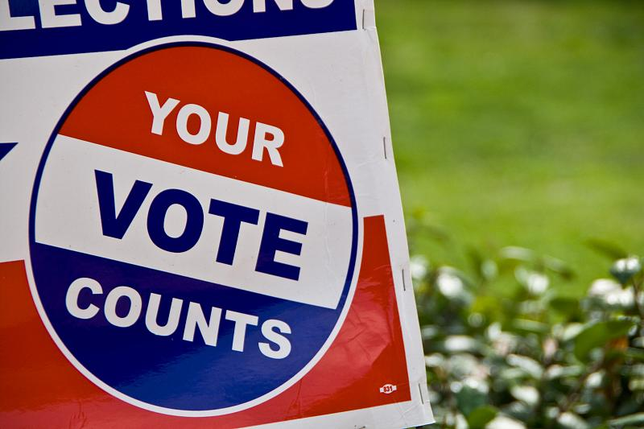

To my loyal readers: I’ve been up to my eyeballs in data analysis, aiming to have a decent manuscript draft before the holidays. This has meant revisiting and in many cases refining my previous quantitative musings, and it’s sucking up a lot of time. My Python coding and Excel analysis skills are relatively decent, but it takes focus (and coffee) to create code that someone may want to read and understand someday.
I trust you’ll bear with me—there’s so much political volume about the upcoming US Elections these days that nothing else is breaking in anyway. To that end, here’s some content to consider:
As a scientist, I would be 100% in favor of banning any reporting of polling numbers. They’re just fuel for speculation about the outcome of an experiment, anyway, and the process of measuring them quantitatively affects the measurement, a sort of Heisenberg Uncertainty Principle of elections.
Many jurisdictions provide a quiet period before votes are cast, so perhaps that’s a more palatable approach. In our case, that would have to start around October 1 before Election Day, with the caveat that no early voting can happen before then.
As a short aside: On the political spectrum, I’m center-right in my preferences. In an ordinary year, that would mean biasing my votes toward the Republican side so that even if the Democrats take power, there’s a balance. But in these times, I’ll vote for the straight Democratic ticket nationally. The party of Lincoln needs to get whacked upside the head hard enough to return it to its original purpose—ensuring that democratic processes (of the majority) don’t disenfranchise the minority, and I need to do my part to ensure that the message gets through loud and clear.
I’ll return with fresh content after Election Day, ideally with a manuscript on the way to a final draft. I need to revise the statement of purpose for this newsletter, too, so I may do that first. In the meantime, bear with me; if you’re eligible, VOTE. [Yes, even if you disagree with my rationale.]
